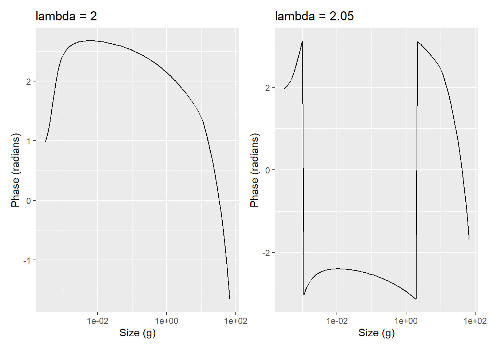
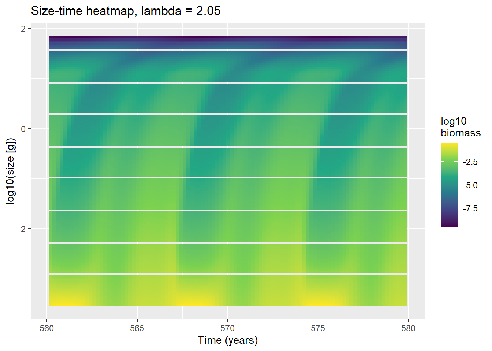
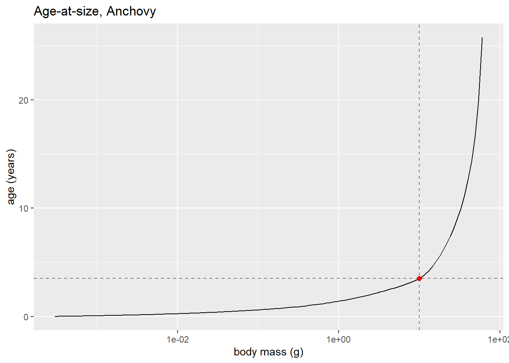

Day 11: Generation Time, the Growth-Rate Proof, and Unwrapping Day 8’s Discontinuity
research
mizer
phase
growth-rate
generation-time
consolidation
blog
A consolidation day: confirming that Day 8’s lambda = 2.05 phase ‘discontinuity’ is just Arg() wrapping, actually calculating generation time against the oscillation period, and deriving a phase-growth-rate relationship that turns out to fail a direct check against the data which is itself the more interesting result.
Author
Samia
Published
June 22, 2026
Where Day 10 Left Us
Day 10 closed on fishing frequency, not selectivity, being the dominant lever behind the new bottlenecks created by peaks-only fishing. That thread is still open (the lambda-vs-bottleneck-timing sweep and the window x effort grid are both still queued), but today went back further, to something from Day 8 that had been left unexplained: the near-discontinuous phase jumps that appeared when lambda moved from 2 to 2.05. Today was a consolidation day, going back over that result properly with real numbers instead of leaving it as an “interesting but weird” footnote.
All of the code below was actually run today (not just sketched). Each section ends with a short what this shows note giving the real numbers that came out, not a guess at what they should be.
Closing the Loop on Day 8: Why Lambda = 2.05 “Broke” the Phase Plot
Day 8’s phase-by-size-class plot (Arg() of the DFT coefficient at the dominant frequency, for each size bin) looked smooth at lambda = 2, but at lambda = 2.05 it showed sharp jumps across almost the full \(\pm\pi\) range at two size ranges. At the time this got filed as evidence of “a bifurcation point at lambda = 2,” treating the balanced food environment as a structurally special case.
That framing doesn’t hold up. Arg() only ever returns a value in \((-\pi, \pi]\), because a complex number’s angle is only defined modulo \(2\pi\). Whatever the true, unwrapped phase lag of the system is doing as size increases, the moment it crosses an odd multiple of \(\pi\), Arg() snaps it back into range producing an apparent jump of almost a full \(2\pi\) in the plot even though nothing physically discontinuous happened. If lambda = 2.05 makes that crossing happen (twice, within the size range tested) and lambda = 2 doesn’t, that alone is enough to produce exactly the pattern seen on Day 8, with no need for a bifurcation.
Code
library(mizer)library(patchwork)library(reshape2)library(plotly)library(dplyr)library(mizerExperimental)library(tidyverse)library(glue)library(ggplot2)# Same single-species Anchovy setup as Day 8, wrapped in a function so it can# be re-run cleanly for both lambda values without copy-pasting the pipeline.run_anchovy <-function(lambda) { p <-list(dt =0.001, dx =0.1, w_min =0.0003, w_max =66.5,w_mat =10, alpha =0.1, gamma =750, lambda = lambda, a0 =100 ) kappa <- p$a0 *exp(-6.9* (p$lambda -1)) no_w <-round(log(p$w_max / p$w_min) / p$dx) params <-newSingleSpeciesParams(species_name ="Anchovy",w_min = p$w_min, w_max = p$w_max, w_mat = p$w_mat,no_w = no_w, lambda = p$lambda, kappa = kappa,alpha = p$alpha, gamma = p$gamma, ks =0 )# getResourceRate() is the older name for this getter (mizer now suggests# resource_rate()) but it still works and is what was actually run today. r <-getResourceRate(params) *0.001 params <-setResource(params, resource_rate = r,resource_dynamics ="resource_semichemostat") params@initial_n_pp[] <- params@cc_pp *0.1# Spin up, then crash the large size class to kick the system off# equilibrium and let the food-limitation cycle from Day 7/8 develop. sim <-project(params, t_max =10, dt =0.1, t_save =0.2,progress_bar =FALSE, method ="predictor-corrector") idx <- params@w >=10& params@w <=100 last <-dim(sim@n)[1] sim@n[last, , idx] <- sim@n[last, , idx] /10^3 sim <-project(sim, t_max =90, dt =0.1, t_save =0.2,progress_bar =FALSE, method ="predictor-corrector") sim_300 <-project(sim, t_max =200, dt =0.1, t_save =0.2,progress_bar =FALSE, method ="predictor-corrector") sim_600 <-project(sim_300, t_max =300, dt =0.1, t_save =0.2,progress_bar =FALSE, method ="predictor-corrector")list(params = params, sim_600 = sim_600)}# Note: this triggers a mizer warning about an "unrealistic erepro" value for# Anchovy. That's expected for this toy single-species fit (it isn't tuned to# match a real stock's reproductive biology) and isn't a sign of a bug.# Reused from Day 8: power spectrum of a (mean-subtracted) signal, skipping# the zero-frequency bin.power_spectrum <-function(signal, dt) { signal <- signal -mean(signal) n <-length(signal) freqs <- (1:(n -1)) / (n * dt) power <-Mod(fft(signal))^2 half <-seq_len(floor((n -1) /2))data.frame(freq = freqs[half], period =1/ freqs[half], power = power[half +1])}# DFT coefficient at the dominant frequency, for every size bin at once.# Mod() gives amplitude, Arg() gives the (wrapped) phase used throughout.phase_by_size <-function(sim_600, params) { times <-as.numeric(dimnames(sim_600@n)[[1]]) bm <-getBiomass(sim_600)[, "Anchovy"] ps <-power_spectrum(bm[times >300], 0.2) period_dom <- ps$period[which.max(ps$power)] omega <-2* pi / period_dom post <- times >300 t_vec <- times[post] - times[post][1] n_post <- sim_600@n[post, "Anchovy", ] coeffs <-apply(n_post, 2, function(x) { signal <- x -mean(x)sum(signal *exp(-1i * omega * t_vec)) })list(period_dom = period_dom,df =data.frame(w = params@w, amplitude =Mod(coeffs), phase =Arg(coeffs)))}run_2 <-run_anchovy(2)run_2.05<-run_anchovy(2.05)res_2 <-phase_by_size(run_2$sim_600, run_2$params)res_2.05<-phase_by_size(run_2.05$sim_600, run_2.05$params)df_2 <- res_2$dfdf_2.05<- res_2.05$df
Code
p1 <-ggplot(df_2, aes(x = w, y = phase)) +geom_line() +scale_x_log10() +labs(x ="Size (g)", y ="Phase (radians)", title ="lambda = 2")p2 <-ggplot(df_2.05, aes(x = w, y = phase)) +geom_line() +scale_x_log10() +labs(x ="Size (g)", y ="Phase (radians)", title ="lambda = 2.05")p1 + p2

What this shows: at lambda = 2, the phase stays inside \([-1.66, 2.68]\) radians across the whole size range, well within one branch of \((-\pi,\pi]\), so there’s nothing to wrap. At lambda = 2.05, phase spans \([-3.14, 3.13]\) radians, i.e. essentially the full circle, and there are two places where it jumps almost exactly \(2\pi\) between adjacent size bins: a jump of 6.16 radians around \(w \approx 0.0010\)–\(0.0011\) g, and a jump of 6.25 radians around \(w \approx 1.95\)–\(2.15\) g (both compared with a largest jump of only 0.31 radians anywhere in the lambda = 2 curve). \(2\pi \approx 6.28\), so these are indeed full wraps, not gradual structural changes.
(Day 8’s original eyeballed read placed the jump locations at roughly 0.003–0.01 g and ~1 g which is in the right ballpark but not exact, which is itself a small reminder that Day 8’s numbers were never claimed to be precise either.)
If this really were a dynamical bifurcation, it should leave a mark on the actual dynamics, not just on a quantity (\(\mathrm{Arg}\)) that is mathematically guaranteed to wrap. The size-time heatmap is a check on exactly that:
Code
times <-as.numeric(dimnames(run_2.05$sim_600@n)[[1]])t_win <- times >560& times <580# ~4 cyclesbm_win <-sweep(run_2.05$sim_600@n[t_win, "Anchovy", ], 2, run_2.05$params@w^2, "*")df_heat <-melt(bm_win)names(df_heat) <-c("time", "w", "bm")df_heat$time <-as.numeric(as.character(df_heat$time))df_heat$w <-as.numeric(as.character(df_heat$w))ggplot(df_heat, aes(x = time, y =log10(w), fill =log10(pmax(bm, 1e-12)))) +geom_raster() +scale_fill_viridis_c(name ="log10\nbiomass") +labs(x ="Time (years)", y ="log10(size [g])",title ="Size-time heatmap, lambda = 2.05")

What this shows: the heatmap at lambda = 2.05 looks like Day 8’s lambda = 2 heatmap ,with a slightly diagonal structure, everything brightening and dimming together. Nothing about the raw dynamics looks different near the two “jump” sizes. The only place the lambda = 2.05 case looks different from lambda = 2 is in the wrapped phase number, exactly what the wraparound explanation predicts and the bifurcation explanation doesn’t.
How Long Does It Take to Grow Up? Calculating Generation Time
Day 8’s mechanistic story was that the oscillation period is set by how long it takes a recruit to grow up to maturity, supported indirectly by the period ~ w_mat^0.2 scaling law. The generation time itself had never actually been calculated. Today it was, using the steady-state growth rate from getEGrowth():
Code
params <- run_2$paramsg <-getEGrowth(params)["Anchovy", ] # steady-state growth rate g(w)w <- params@wdw <- params@dw# age(w) = integral_{w_min}^{w} 1/g(w') dw', via the trapezoidal rule —# i.e. cumulative time spent growing from w_min up to w.integrand <-1/ gage <-c(0, cumsum((integrand[-1] + integrand[-length(integrand)]) /2* dw[-length(dw)]))age_at_mat <-approx(x = w, y = age, xout = params@species_params$w_mat)$ydf_age <-data.frame(w =head(w, -1), age =head(age, -1))ggplot(df_age, aes(x = w, y = age)) +geom_line() +geom_vline(xintercept = params@species_params$w_mat, linetype ="dashed", colour ="grey50") +geom_hline(yintercept = age_at_mat, linetype ="dashed", colour ="grey50") +annotate("point", x = params@species_params$w_mat, y = age_at_mat, colour ="red", size =2) +scale_x_log10() +labs(x ="body mass (g)", y ="age (years)", title ="Age-at-size, Anchovy")

age_at_mat is exactly the generation time: how long, in years, a fish takes to grow from w_min to w_mat under the steady-state growth rate.
What this shows: at lambda = 2, age_at_mat = 3.50 years and the dominant FFT period (period_dom, same machinery as Day 8) = 8.33 years, giving a ratio of 2.38, not 3. Re-running the same calculation under the lambda = 2.05 parameters gives age_at_mat = 2.70 years against a period of 7.14 years giving a ratio of 2.65. So the period is consistently a small multiple of the generation time, somewhere around 2.4–2.7, in both cases closer to “two and a half generations” than to a clean “three generations.” The original ballpark guess was in the right neighbourhood, but the actual number ,once calculated rather than eyeballed, is a bit lower than that. The fact that it isn’t a clean integer (2, 3, or otherwise) in either case is itself worth sitting with rather than rounding away.
The Phase-Growth-Rate Proof and Where It Breaks
The rest of the day went into deriving, properly, how phase should depend on growth rate, rather than just asserting the relationship. The derivation has two pieces: where the phase physically comes from in mizer’s underlying equation, and what slope it should therefore have as a function of size. Each piece holds up on its own. What doesn’t hold up is the final prediction, once it’s actually checked against today’s numbers, and that failure turns out to be informative rather than just a dead end.
Where the phase physically comes from: mizer’s transport equation
Mizer’s size-spectrum dynamics are, at their core, a transport equation in \(w\):
meaning biomass density is advected through size-space along characteristic curves defined by \(dw/dt = g(w)\). A characteristic starting at \(w_{min}\) at birth time \(t_{\text{birth}}\) reaches size \(w\) at time \(t_{\text{birth}} + \tau(w)\), where \(\tau\) solves \(d\tau/dw = 1/g(w)\) with \(\tau(w_{min})=0\). Separating variables,
exactly the age-at-size integral calculated in the previous section. So a perturbation introduced at \(w_{min}\) at time \(t_{\text{birth}}\) is carried, to leading order, along this characteristic and peaks at size \(w\) at time
\[t_{\text{peak}}(w) = t_{\text{birth}} + a(w).\]
From peak time to phase, and the sign that connects it to Arg()
Model the (mean-subtracted) signal at size bin \(w\) as \(\text{signal}_w(t) = A(w)\cos(k t - \phi(w))\), with \(A(w)>0\) and \(k = 2\pi/{}\)period_dom the dominant angular frequency (the code’s omega). This cosine is at its maximum exactly when its argument is \(0 \bmod 2\pi\), i.e. when \(k t - \phi(w) = 0\). Solving for \(t\) defines \(t_{\text{peak}}(w) = \phi(w)/k\), i.e.
Differentiating \(\phi(w) = k\,t_{\text{birth}} + k\,a(w)\) with respect to \(w\) (product rule, with \(u(w)=k\) constant and \(v(w)=a(w)\), so \(u'(w)=0\)):
using \(da/dw = 1/g(w)\) from the fundamental theorem of calculus applied to the age-at-size integral.
In plain language: picture each size class as a clock showing how long ago that fish was tiny. Bigger fish reflect what small fish were doing further in the past, and “phase” is just that time-lag written as an angle instead of a number of years. If growth is slow, a lot of lag builds up between one size and the next, so the angle should move a lot per step in size; if growth is fast, the angle barely moves. That same logic is what produces the wraparound in the section above: an angle that moves a lot eventually wraps around the circle.
Checking it against today’s numbers
The prediction is specific enough to test directly: Arg(coeffs) should fall steadily as size increases, and the total fall from \(w_{min}\) to \(w_{mat}\) should equal \(k \cdot a(w_{mat}) = 2\pi/2.38 \approx 2.64\) radians (using the lambda = 2 numbers from the previous section).
That is not what the lambda = 2 phase curve actually does. Reading the curve plotted earlier: phase starts at 0.98 radians at \(w_{min}\), rises to a peak of about 2.68 radians around \(w \approx 0.005\) g, and only then starts falling, reaching 1.40 radians by \(w \approx 9.8\) g (the nearest size bin to \(w_{mat} = 10\) g) before continuing down to \(-1.66\) at \(w_{max}\). The measured change from \(w_{min}\) to \(w_{mat}\) is \(0.98 - 1.40 = -0.42\) radians: the wrong sign (phase rose slightly overall, it didn’t fall) and less than a sixth of the predicted 2.64 radian drop.
Why the simple picture fails. The derivation assumes something that isn’t true, which is that growth rate is fixed. Neither holds.. Today’s derivation independently predicts what a non-feedback, one-way version of this system would look like, a phase that falls steadily and by a specific predictable amount, and the real curve does neither. Two independent checks (the heatmap’s structure; the wrong-signed, wrong-sized phase drop) land on the same conclusion.
The fixed-growth-rate assumption is also suspect on its own terms: the food supply driving growth oscillates along with everything else in this model, so \(g(w)\) measured at the unperturbed steady state is, at best, an average over a quantity that’s actually moving. Separating “the model is a feedback loop, not a delay line” from “the growth rate used was the wrong (time-averaged) one” isn’t possible from today’s numbers alone, both push in the direction of breaking the simple proof, and untangling them is the natural next step.
A side exploration today, looking for parameter settings closer to a pure sine wave (low harmonic content) rather than Day 8’s sharp-crash-long-plateau shape, was aimed at getting a cleaner signal to eventually retest this against a single-frequency, low-harmonic signal is a fairer test of a single-frequency theory than the one used above. Bumping the resource depletion rate from 0.001 to 0.01 (faster-replenishing resource pool) was the first thing tried:
This is set up and runs cleanly, but the comparison against the (now revised) proof hasn’t been done yet. That’s queued for tomorrow rather than claimed here.
What’s Next
Separate the two reasons the simple proof failed. Redo the phase-vs-growth-rate check using a growth rate that actually varies with time (not the fixed steady-state snapshot), to see how much of today’s mismatch that accounts for on its own and how much is left over that can only be explained by the feedback-loop structure itself.
Strogatz, Nonlinear Dynamics and Chaos, Chapter 7 (limit cycles). Now that the oscillation looks like a genuine self-sustained cycle, it’s worth putting it on proper footing with the standard theory rather than reasoning about it ad hoc — and limit-cycle theory may have a cleaner way to handle phase in a feedback loop than the one-way delay-line model tried today.
Learn the discrete Fourier transform properly. So far fft() has been used as a black box. Understanding frequency bins, the Nyquist limit, and normalisation should put today’s phase argument on firmer ground.